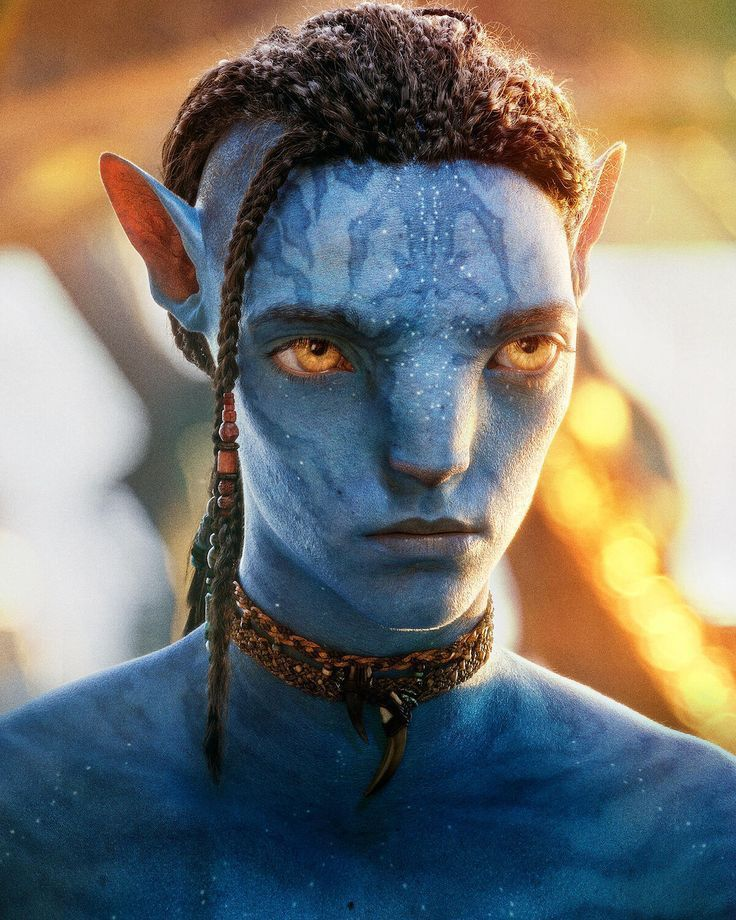

Jake Sully é um dos personagens principais do filme, que acabou se tornando um aprendiz do povo Na'vi
Ele aprendeu a se contectar com a natureza e os animais de Pandora se tornando um guerreiro poderoso.
Junto de Neytiri lutaram para libertar o povo Na'vi dos militares.
Princesa Neytiri te Tskaha Mo’at’ite é uma dos protagonistas e heroína principal em Avatar e a princesa Na’vi do clã Omaticaya. Ela é a segunda filha de Eytukan e Mo’at e irmã mais nova de Sylwanin.
Ela cresceu aprendendo através das músicas, como todos os Na’vi, aprendendo a amar e celebrar sua conexão com Eywa e todas as outras vidas.
Ela presumivelmente conheceu os anciões do Clã Tawkami no passado, já que todas as máscaras de cavaleiro como a dela são personalizadas para cada cavaleiro.
Tonowari é o olo'eyktan do clã Metkayina. Como Jake, ele supervisiona o bem-estar geral de seu clã, incluindo caçadas principais, construção e reparo de estruturas de aldeias e arbitragem geral entre os membros do clã.
Tonowari é um guerreiro feroz, mas também um estadista e líder falante e seu clã o respeita por seus ideais e sua capacidade de liderá-los em tempos de grande desafio.
Ele e sua esposa Ronal acabam lutando com as repercussões de abrigar a família Sully e o que isso significa para seu clã.
Ronal, líder da tribo Metkayina, novo grupo de Na'Vi que será apresentado na continuação. Ela, também, está gravida.
Ela é uma líder profundamente leal e corajosa," Winslet disse à revista.
"Ela é forte. Uma guerreira. Mesmo diante de um grande perigo, e com um bebê a caminho, ela ainda se junta ao seu povo e luta pelo que ela mais valoriza. Sua família e sua casa."
Miles Quaritch é o antagonista principal de Avatar.
Chamado a Pandora por Selfridge para combater os Na'vi que se tornassem agressivos, Quaritch tem tendências naturalmente violentas contra eles, desejando enfrentá-los em campo aberto.
Curiosamente, Quaritch é uma pessoa decente - embora estrita - e realmente se preocupa com os homens ao seu comando.
Neteyam nasceu em 2155 como o filho primogênito de Jake e Neytiri. Seu nascimento foi celebrado por todo o clã Omatikaya .
Neytiri recebeu o primeiro filho com muita emoção. Na mesma época, seus pais adotaram Kiri , a filha nascida do avatar de Grace Augustine
Lo'Ak é o segundo filho de Jake e Neytiri (tirando a adoção de Kiri),sua personalidade envolve sser teimoso, mau humorado.
Ele gosta de implicar sua irmã mais velha Kiri e caçar com seu pai e seu irmão neteyam.

Kiri, a filha da Dra. Grace Augustine que é adotada por Jake e Neytiri.
A garota que possui uma conexão incomum com os seres de Pandora, transmite uma aura de mistério e misticidade que causaram diversas incógnitas na cabeça dos fãs da trama alienígena.
Apelidado de Tuk , é a única filha biológica de Jake Sully e Neytiri e seu filho mais novo aos sete anos de idade.
Ela tem dois irmãos biológicos mais velhos: Neteyam e Lo'ak , uma irmã adotiva mais velha, Kiri
Elenco
Samuel Henry John "Sam" Worthington é um ator australiano nascido na Inglaterra.
Se tornou conhecido principalmente por seus papéis no cinema como Jake Sully no premiado Avatar
Nascimento: 2 de agosto de 1976 (idade 46 anos), Godalming, Reino Unido
Zoe Saldana-Perego, nascida Zoë Yadira Saldaña Nazario, é uma atriz americana. Após apresentações com o grupo de teatro Faces, ela fez sua estreia nas telas em um episódio de Law & Order do ano de 1999.
Sua carreira no cinema iniciou um ano depois com o filme Center Stage, seguido por Crossroads
Nascimento: 19 de junho de 1978 (idade 45 anos), Passaic, Nova Jersey, EUA
Susan Alexandra Weaver, é uma atriz norte-americana.
Uma figura feminina na ficção científica e na cultura popular, ela recebeu vários prêmios,
incluindo um British Academy Film Award, dois Golden Globe Awards e um Grammy Award, além de indicações para três Oscars, quatro Primetime Emmy Awards e um Prêmio Tony.
Nascimento: 8 de outubro de 1949 (idade 73 anos), Manhattan, Nova Iorque, Nova York, EUA
Filhas: Charlotte Simpson
Cônjuge: Jim Simpson (desde 1984)
Próximos filmes: Avatar 3, Avatar 5, Avatar 4
Irmãos: Trajan Weaver
Kate Elizabeth Winslet, é uma atriz britânica, vencedora de um Oscar, dois Emmy, cinco Globos de Ouro
Nascimento: 5 de outubro de 1975 (idade 47 anos), Reading, Reino Unido
Filhos: Mia Threapleton, Joe Alfie Winslet Mendes
Próximo filme: Avatar 3
Prêmios: Oscar de Melhor Atriz
Pais: Sally Bridges-Winslet, Roger Winslet
Cônjuge: Edward Abel Smith (desde 2012), Sam Mendes (de 2003 a 2011), Jim Threapleton (de 1998 a 2001)
Cliff Curtis é um ator neozelandês. Os seus papéis no cinema incluem Encantadora de Baleias, Once Were Warriors, Blow e Collateral Damage.
E seus trabalhos na televisão incluem as séries Trauma, Body of Proof, Missing, Gang Related e a série americana Fear The Walking Dead.
Nascimento: 27 de julho de 1968 (idade 54 anos), Rotorua, Nova Zelândia
Altura: 1,84 m
Próximos filmes: Meg 2: The Trench, Avatar 3, Avatar 5, Avatar 4
Joel David Moore é um ator, diretor de cinema e produtor norte-americano.
Ele cursou artes cênicas na universidade antes de se mudar para Los Angeles para seguir a carreira cinematográfica.
Nascimento: 25 de setembro de 1977 (idade 45 anos), Portland, Oregon, EUA
Cônjuge: Kineret Karen Ben Yishay Moore (de 2009 a 2011)
Próximos filmes: Avatar 5, Avatar 3, Avatar 4
Irmãos: Adam Moore
Pais: Missy Moore, John Moore
Stephen Lang é um ator norte-americano. É conhecido principalmente por ser o vilão Coronel Miles Quaritch em Avatar e o Comandante Taylor em Terra Nova.
Ele é casado com a atriz Kristina Watson com quem tem 4 filhos.
Nascimento: 11 de julho de 1952 (idade 70 anos), Nova Iorque, Nova York, EUA
Altura: 1,79 m
Cônjuge: Kristina Watson (desde 1980)
Filhos: Lucy Lang, Noah Lang, Daniel Lang, Grace Lang
Próximos filmes: Avatar 3, Avatar 5, Avatar 4
Britain Dalton é um ator americano conhecido por seu papel como Lo'ak, o segundo filho de Jake Sully e Neytiri,
no filme de ficção científica Avatar: The Way of Water.
Nascimento: 12 de dezembro de 2001 (idade 21 anos), Califórnia, EUA
Pais: Jeremy Dalton
Próximos filmes: Avatar 3, Avatar 5, Avatar 4
Jack Champion é um ator americano. Ganhou notoriedade por seu papel como Spider em Avatar: The Way of Water
Nascimento: 16 de novembro de 2004 (idade 18 anos), Blacksburg, Virgínia, EUA
Bailey Bass é uma atriz americana. Ela é conhecida por seus papéis como Tsireya, uma mergulhadora livre, em Avatar: The Way of Water
Nascimento: 18 de junho de 2003 (idade 20 anos), Nashville, Tennessee, EUA
Altura: 1,65 m
Próximos filmes: Avatar 3, Avatar 5, Avatar 4
Jamie Flatters é um ator britânico nascido em Londres, no Reino Unido, no dia 7 de julho de 2000.
Flatters já participou de 12 produções, entre séries e longas-metragens.
Nascimento: 7 de julho de 2000 (idade 22 anos), Londres, Reino Unido

.png)
.png)


.jpeg)